فترة تجريبية
التطبيق الآن في فترة تجريبية. استمر في استخدام النظام الحالي كالمعتاد (البصمة والإجراءات الحالية) إلى جانب التطبيق الجديد، حتى تُعلن إدارة الموارد البشرية غير ذلك.
١ تنزيل التطبيق
- أندرويد: افتح download.petrokima-hr.com ونزّل تطبيق بتروكيما ثم ثبّته. على أندرويد يعمل التسجيل من التطبيق فقط وليس من المتصفح.
- آيفون: افتح app.petrokima-hr.com في Safari، اضغط زر المشاركة ثم «إضافة إلى الشاشة الرئيسية»، وافتح التطبيق من أيقونته.
٢ أول تسجيل دخول
- اكتب كود الموظف وكلمة المرور المؤقتة التي أعطتها لك الموارد البشرية، ثم اضغط تسجيل الدخول.
- في شاشة «مرحباً بك» اكتب سنة ميلادك (٤ أرقام) للتأكد من هويتك.
- اختر كلمة مرور خاصة بك: ٨ أحرف على الأقل، حروف وأرقام، ومختلفة عن المؤقتة. اكتبها مرتين ثم اضغط حفظ كلمة المرور.
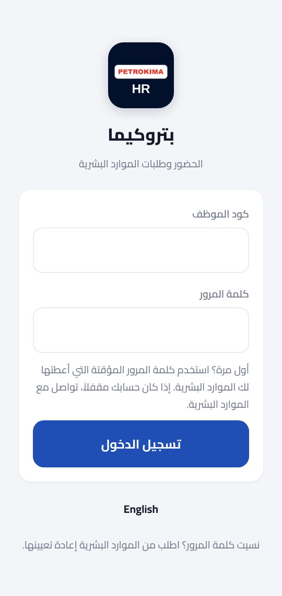
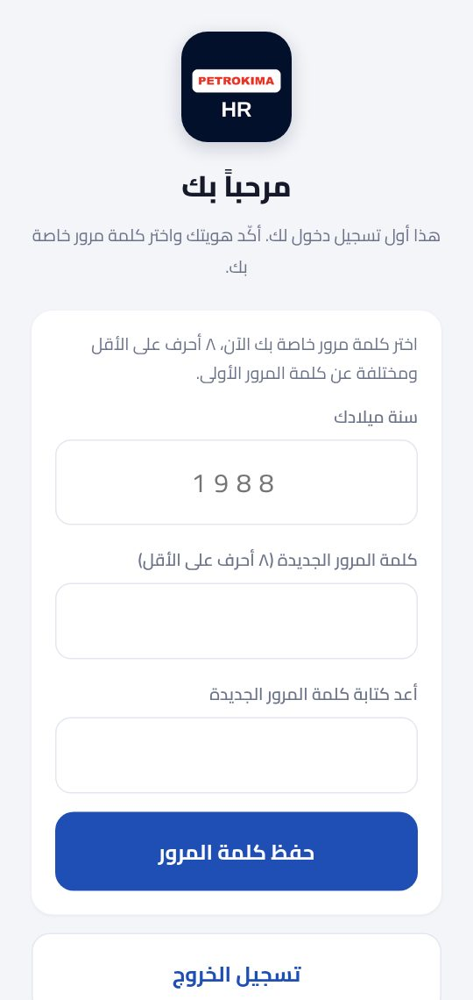
٣ تسجيل الحضور والانصراف
- افتح تبويب ⏱ الحضور. تأكد أن الموقع (GPS) مفعّل — الموقع مطلوب مع كل تسجيل.
- في موقع مشروع اضغط تسجيل حضور في مشروع، واختر المشروع من مشروعاتك (أو ابحث بالكود أو الاسم)، ثم اضغط الزر الأخضر تسجيل الحضور في ….
- في المكتب اضغط تسجيل حضور بدون مشروع.
- عند الانتقال إلى مشروع آخر في نفس اليوم اضغط تغيير الموقع. عند نهاية اليوم اضغط تسجيل انصراف.
- ضغطت الانصراف بالخطأ؟ يظهر زر «↩ إلغاء الانصراف» لمدة ٥ دقائق.
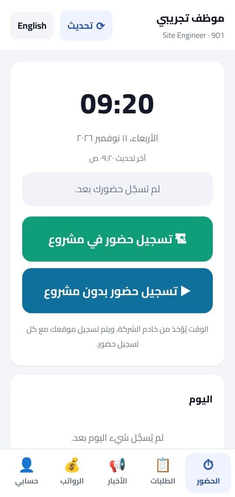
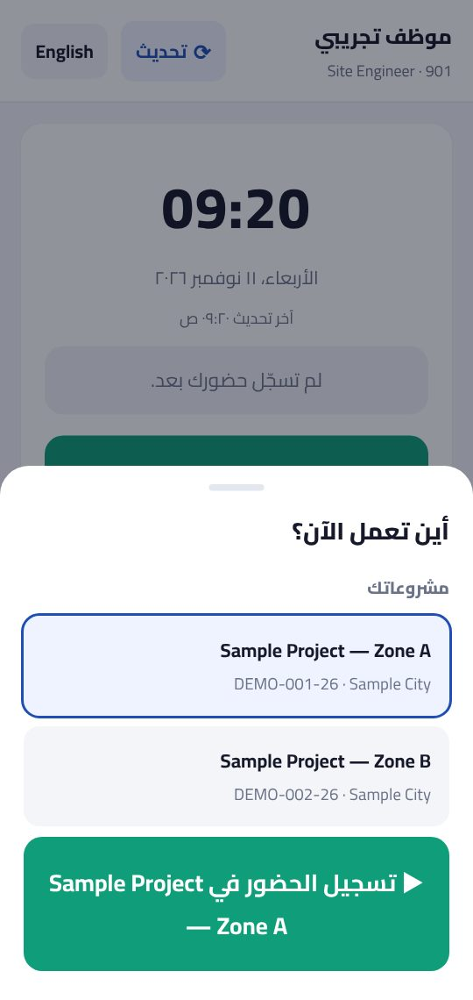
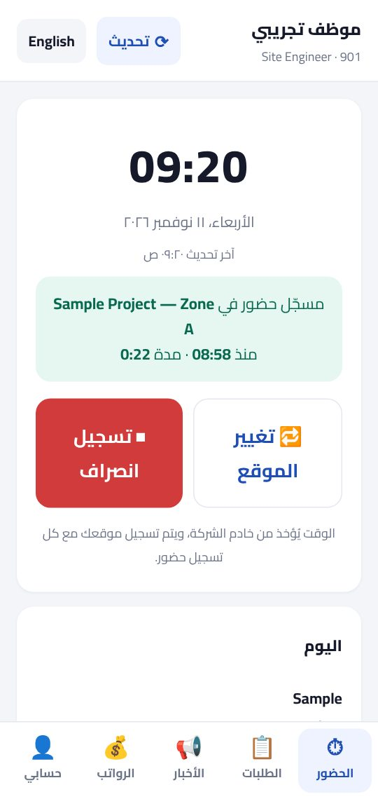
٤ الطلبات
- افتح تبويب 📋 الطلبات. في الأعلى رصيد إجازتك السنوية والأذونات المستخدمة هذا الشهر.
- اختر نوع الطلب: طلب إجازة، إذن تأخير / انصراف مبكر، مأمورية خارجية أو طلب آخر من الموارد البشرية.
- املأ النافذة (النوع، التواريخ، السبب) — تعرض النافذة القواعد والرصيد بعد الطلب — ثم اضغط إرسال الطلب.
- تابع طلباتك تحت طلباتي: يذهب الطلب إلى مديرك المباشر ثم إلى الموارد البشرية. يمكنك إلغاء الطلب ما دام في الانتظار.
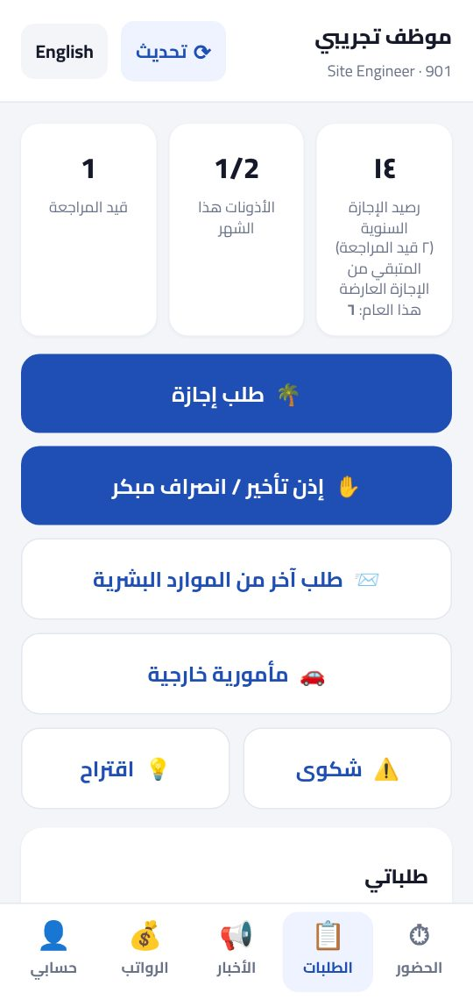
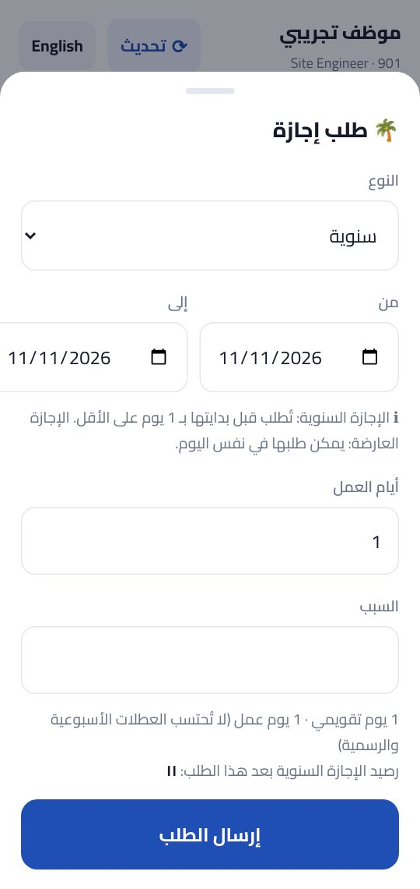
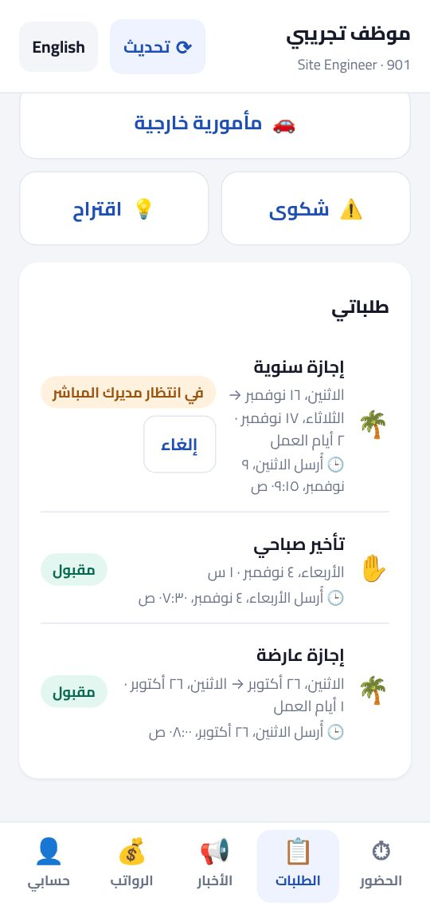
٥ الرواتب وحسابي
- 💰 الرواتب: مفرداتك محمية — اكتب كلمة المرور مرة أخرى ثم اضغط عرض مفرداتي. تُغلق تلقائياً عند مغادرة التبويب.
- 👤 حسابي: بياناتك، و✏️ تحديث بيانات الاتصال (الموبايل، البريد، العنوان)، وتغيير كلمة المرور، وتسجيل الخروج.
- 📢 الأخبار: إعلانات وقرارات الشركة. زر English أعلى الشاشة يغيّر اللغة، وتحديث يقرأ آخر البيانات.
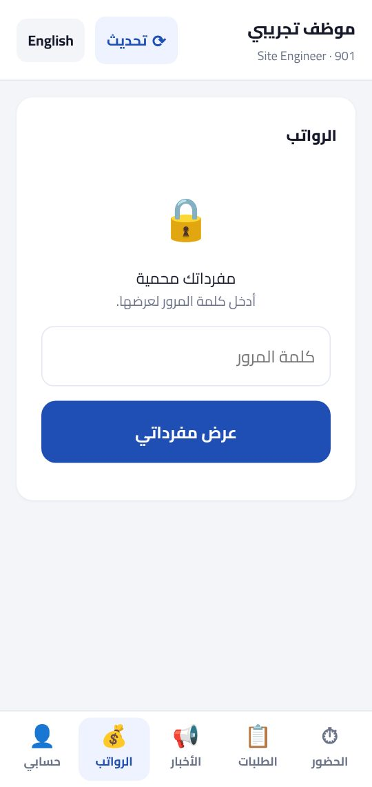
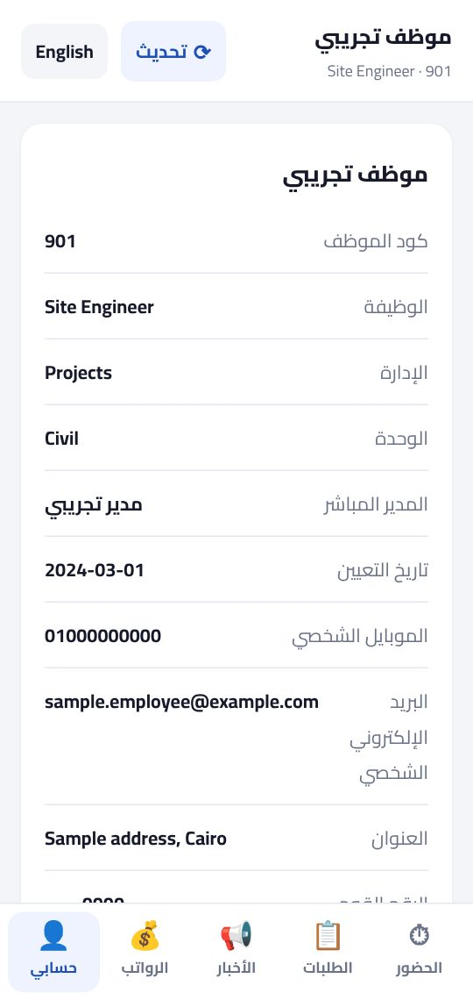
إذا احتجت مساعدة
نسيت كلمة المرور، أو الحساب مغلق، أو تريد تغيير الهاتف؟ تواصل مع إدارة الموارد البشرية — أو ردّ على البريد الذي وصلك منها. يوجد أيضاً دليل لنسخة الكمبيوتر: app.petrokima-hr.com/guide-desktop.html
Trial period
The app is in a trial period. Keep using the current system as usual (the fingerprint machine and today's procedures) alongside the new app, until HR announces otherwise.
1 Get the app
- Android: open download.petrokima-hr.com, download the Petrokima app and install it. On Android, checking in works only from the app, not from the browser.
- iPhone: open app.petrokima-hr.com in Safari, tap the Share button, then "Add to Home Screen", and open the app from its icon.
2 Your first sign-in
- Type your Employee code and the temporary password HR gave you, then tap Sign in.
- On the "Welcome" screen type Your year of birth (4 digits) to confirm who you are.
- Choose your own password: at least 8 characters, letters and numbers, different from the temporary one. Type it twice and tap Save my password.
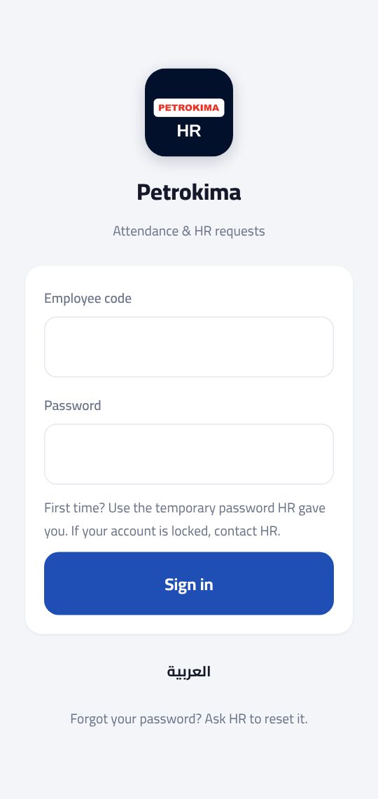
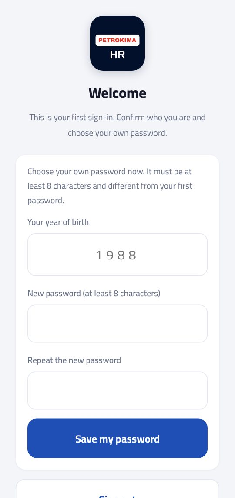
3 Check in and check out
- Open the ⏱ Attendance tab. Make sure location (GPS) is on — it is needed with every check-in.
- At a project site tap Check in at a site, pick the project under Your projects (or search by code or name), then tap the green Check in at … button.
- At the office tap Check in without a project.
- Moving to another project the same day? Tap Switch site. At the end of the day tap Check out.
- Checked out by mistake? An "↩ Undo check-out" button shows for 5 minutes.
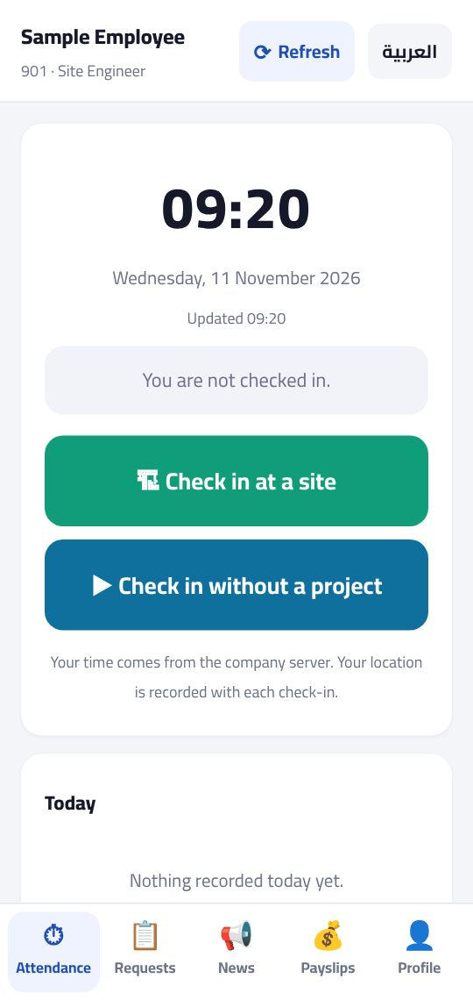
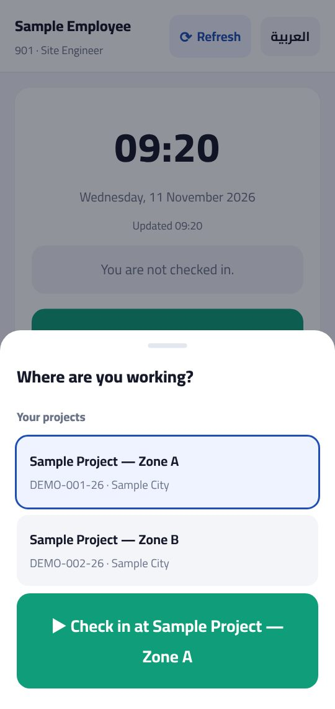
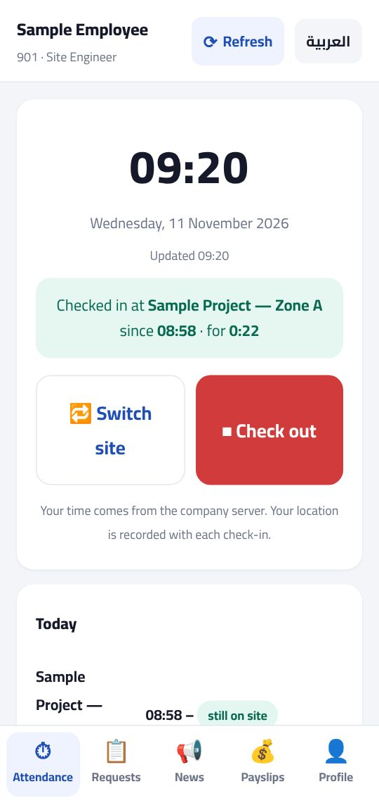
4 Requests
- Open the 📋 Requests tab. At the top: your annual leave balance and the permissions used this month.
- Choose what you need: Request vacation, Late arrival / early leave, Outside mission or Other HR request.
- Fill in the window (type, dates, reason) — it shows the rules and your balance after the request — then tap Send request.
- Follow your requests under My requests: a request goes to your direct manager, then to HR. You can Cancel it while it is waiting.
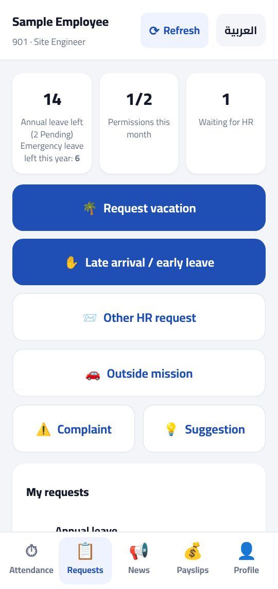
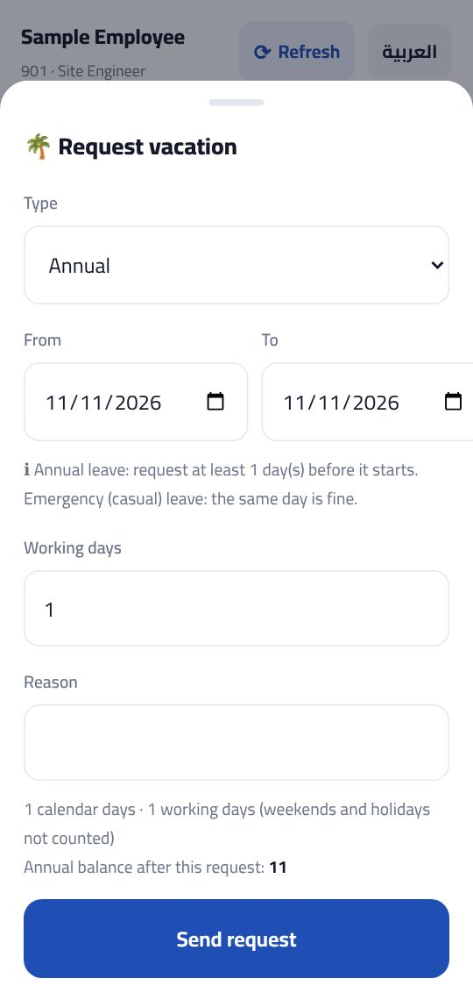
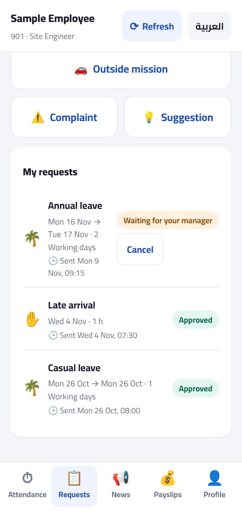
5 Payslips and your profile
- 💰 Payslips: your payslips are protected — type your password again, then tap Show my payslips. They lock again when you leave the tab.
- 👤 Profile: your details, ✏️ Update my contact details (mobile, e-mail, address), Change password and Sign out.
- 📢 News: company announcements and decisions. The العربية button at the top switches the language; Refresh reads the latest data.
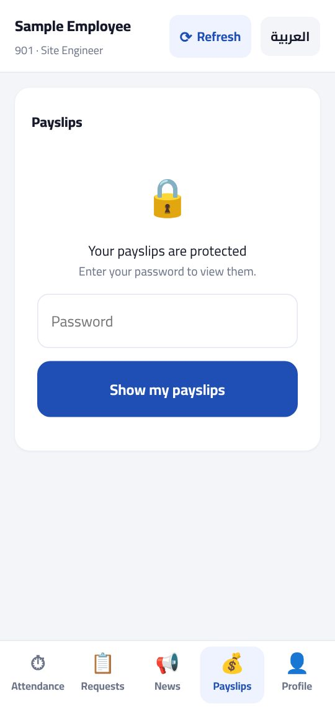
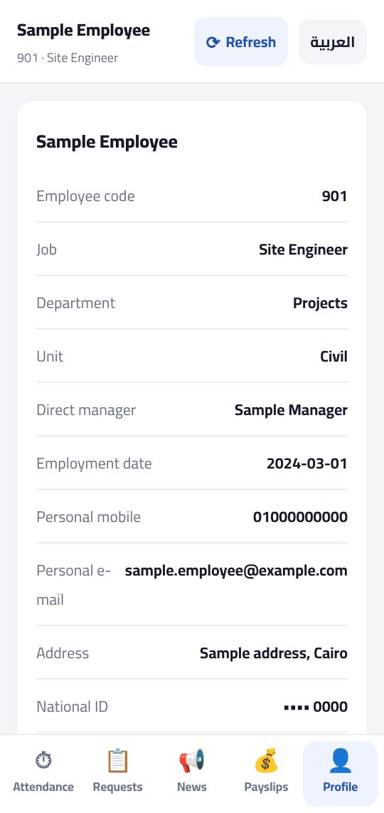
If you need help
Forgot your password, account locked, or a new phone? Contact the HR department — or reply to the e-mail you received from HR. There is also a guide for the computer version: app.petrokima-hr.com/guide-desktop.html